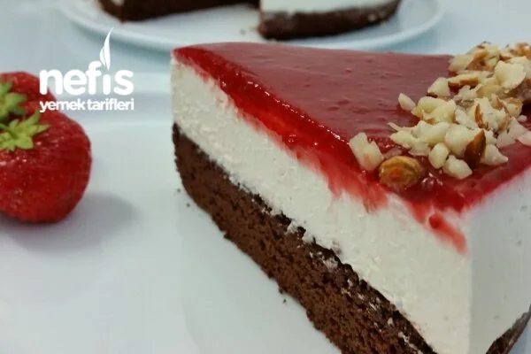

Brownie Cheesecake Tarifi

Brownie Cheesecake, çikolatalı brownie ve kremalı cheesecake’in mükemmel birleşimidir. Bu tatlı, hem yoğun çikolata lezzeti hem de kremalı yumuşak yapısıyla damaklarda unutulmaz bir tat bırakır.
Malzemeler:
Brownie Kısmı İçin:
- 60 gram tereyağ
- 100 gram bitter çikolata
- 125 ml süt (1+1/4 (çeyrek) çay bardağı)
- 40 gram kakao (3/4 (bir yarım+bir çeyrek) çay bardağı)
- 80 gram un (1+1/4 (çeyrek) çay bardağı)
- yarım tatlı kaşığı kabartma tozu
- 2 adet yumurta
- 75 gram şeker (3/4 (bir yarım+bir çeyrek) çay bardağı)
Cheesecake Krema Kısmı İçin:
- 300 gram labne peyniri
- 60 gram pudra şekeri (1 çay bardağı)
- 1 tatlı kaşığı vanilya
- yarım limon suyu
- 250 ml sıvı krema (2, 5 çay bardağı)
Çilek Sosu İçin:
- 200 gram çilek (taze veya dondurulmuş – isteyen başka meyvede kullanabilir)
- Yarım çay bardağı şeker
- 1 yemek kaşığı limon suyu
- 1 tatlı kaşığı vanilya
- 1 yemek kaşığı mısır nişastası
- 2 yemek kaşığı soğuk su
Brownie Cheesecake Tarifi Nasıl Yapılır:
- İlk önce brownie kek yapılır. Küçük bir tencerenin içine yağ, çikolata ve süt koyup, ocakta eriyene kadar karıştırılır ve soğumaya bırakılır.
- Kakao, un ve kabartma tozunu bir kabın içine elekten geçirerek karıştırılır.
- Yeni ayrı bir kabın içine yumurta ve şeker konup, köpürene kadar mikserle çırpılır.
- Çikolata ve un karışımı ilave edilerek yavaşça el çırpıcı ile çırpılır.
- Altı yağlı kağıt serilmiş ve kenarları yağlanmış kelepçeli 24 cm kalıbın içine dökülür
- Önceden ısıtılmış 180 derece fırında yaklaşık 15 dakika pişirilir (bir kürdan yardımı ile test yapılır).
- Pişen kek fırından çıkartılıp, kalıbın içinde soğumaya bırakılır.
- Kekin soğumasını beklerken kreması yapılır. Bir kabın içine labne peynir, pudra şeker, vanilya ve limon suyu konup, güzelce karıştırılır.
- Ayrı bir kabın içinde sıvı krema mikserle kıvama gelene kadar çırpılır ve diğer karışımın içine karıştırılır. Buzdolabında 10 dakika bekletilir.
- Soğumuş olan kek kalıbından çıkartılır ve servis tabağına koyulur.
- Kullandığınız kelepçeli kalıbın çemberi kekin kenarına yerleştirilir.
- Üzerine krema dökülüp her tarafına sürülür ve buzdolabında katı olana kadar bekletilir.
- Son olarak üzerinin sosu yapılır. Bir tencerenin içine çilekler konulur ve suyunu bırakana kadar kısık ateşte pişirilir.
- Suyunu bırakınca şeker, vanilya ve limon suyu eklenip 10 dakika kaynatılır.
- Yumuşayan çilekler blender ile püre haline getirilir.
- Mısır nişastası su ile karıştırılıp çilek sosunun içine dökülüp, sürekli karıştırılır (topaklanmasını önlemek için). Bir kaç dakika karıştırılır ve koyu kıvama gelince, ocaktan alınır ve soğumaya bir kenara konulur.
- Sos soğuduktan sonra pastanın üzerine dökülüp her tarafına eşit şekilde sürülür. Buzdolabında 5-6 saat bekletilir veya ertesi güne kadar.
Afiyet Olsun!
Brownie Cheesecake Fotoğraflı Yapılışı:
Resimler için buraya tıklayınız!